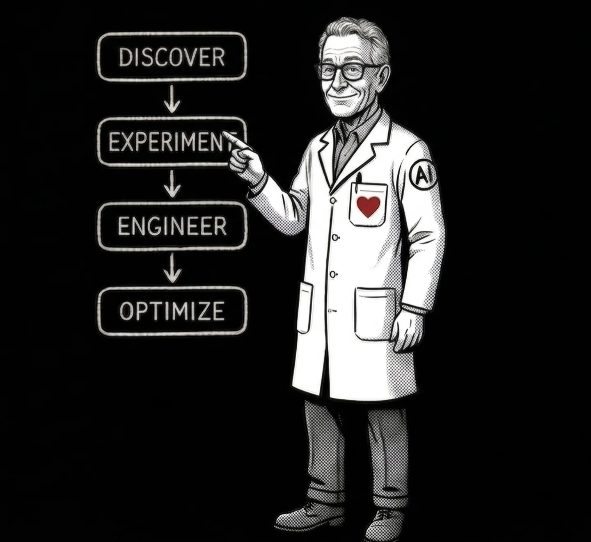
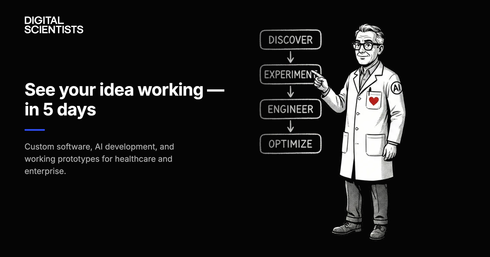

Internal Document — Not for Public Distribution
Digital Scientists
Brand & Site Guide
The single source of truth for anyone — internal team or agency — working on the DS brand, website, or marketing materials.
Part 1 — Brand Identity
1. Who We Are
Digital Scientists builds and operates modern healthcare platforms. Founded in 2007 in Atlanta, Georgia (21 S Main St, Alpharetta, GA 30009), we are an innovation partner that applies the scientific method to software product development.
We help organizations discover what's worth building, prove it works, and scale it to production. We partner with healthcare organizations to fix operational problems, support clinical teams, and deliver measurable financial and quality outcomes using custom digital and AI solutions.
We are not a dev shop. We are not a consultancy. We are not a platform vendor. We are scientists — disciplined, evidence-driven, and unafraid of complexity. We work alongside our clients as partners, not vendors.
By the Numbers
80+
Total team. ~20 US, 60+ nearshore same-timezone.
12–16 yrs
Avg experience across PM, Design, Development.
100%
Production rate on healthcare AI projects.
$20M+
Verified client ROI across portfolio.
HIPAA Compliance
Digital Scientists is HIPAA compliant. We operate with the strictest standards of privacy, security, and compliance:
- ✓ Continuous HIPAA compliance management, including formal ONC security risk assessments
- ✓ Customer-controlled or approved environments (AWS, Azure, GCP)
- ✓ BAA-governed engagements
- ✓ Documented policies, training, and incident response
- ✓ Regular security, privacy, and breach notification risk assessments
Service Pillars
Product Management
Strategic consulting, market definition, business planning, product positioning, development execution, commercialization.
Research & Design
UX/UI and service design for complex ecosystems, design thinking, experience mapping, UX research, prototyping, workshops, accessibility.
Development
Front-end, back-end, mobile, IoT, database, DevOps, machine learning, data engineering, QA, data analytics.
Part 1 — Brand Identity
2. Brand Evolution
The DS brand has evolved significantly since the original 2019 guidelines. This guide supersedes that document entirely.
2007 — Founded
Digital Scientists founded in Atlanta with a vision of establishing a new science of marketing.
2019 — "Experience Lab" Era
Brand guidelines published. Positioned as "an experience lab that accelerates innovation for growth." Primary palette: black & white with spectrum accents. Font: RM Pro. Methodology: Direct, Discover, Design, Develop, Deploy.
2024–2025 — Repositioning Begins
Healthcare emerges as the primary vertical. AI becomes the horizontal capability. Site migration from WordPress to static HTML. New design system: Inter font, dsBlue-led palette, Tailwind CSS.
2026 — Current State
"Builds and operates modern healthcare platforms." Methodology: Discover, Experiment, Engineer, Optimize. Healthcare-first positioning with AI woven throughout. This guide is the authoritative reference.
What Changed
| Element | 2019 | 2026 |
|---|---|---|
| Positioning | "Experience innovation lab" | "Builds and operates modern healthcare platforms" |
| Primary font | RM Pro | Inter |
| Primary color | Black & white | DS Blue #304FFF |
| Methodology | Direct / Discover / Design / Develop / Deploy | Discover / Experiment / Engineer / Optimize |
| Vertical focus | Cross-industry | Healthcare-first |
| Site platform | WordPress | Static HTML / Netlify |
Part 1 — Brand Identity
3. The Name
We lean into the name. "Digital Scientists" is not a metaphor — it's a method.
Rigor Over Hype
We test hypotheses. We gather evidence. We make decisions based on data, not assumptions.
Curiosity
We are drawn to the hard problems. Complex regulatory environments, massive data sets, legacy systems that everyone else avoids.
Honesty
If the evidence says stop, we stop. That is not failure — that is the methodology working.
Usage Rules
- Use the full name "Digital Scientists" in formal contexts (press, proposals, contracts).
- "DS" is acceptable in internal shorthand and casual communication.
- Never abbreviate to "DigiSci," "DigSci," or similar.
- Never refer to the company as "Digital Scientist" (singular).
Part 1 — Brand Identity
4. Core Values
Carried forward from 2019. These still define who we are.
The foundation of our practice. We are constantly learning, always discovering how to push boundaries. An openness to asking "what if?" drives everything we build.
We don't know everything. We listen first. Sometimes a failed experiment is our best teacher. We believe openness to listening is critical to growth.
Fidelity to our process and methodology matters. We practice what we preach, constantly seeking improvement to our way of doing things. Evidence earns the next investment.
We commit. We desire more than just a contract — we earn lasting partnerships. We don't just build and hand off. We operate, support, and stand behind our work.
Part 1 — Brand Identity
5. Methodology
Our four-phase framework is the intellectual backbone of how we work and how we talk about our work.
Discover
"What should we do?"
Research, opportunity mapping, prioritization. We identify the highest-ROI problem to solve.
Experiment
"Does it actually work?"
Working prototypes and MVPs tested on real data, real workflows, real users. Proof before commitment.
Engineer
"Make it real."
Sprint-based production engineering. Architecture for scale, security, and integration.
Optimize
"Make it better."
Ongoing support, monitoring, continuous improvement until KPIs are hit and beyond.
The Principle
Evidence earns the next investment. Every phase produces proof — a validated hypothesis, working software, measurable outcomes — that justifies moving forward.
Retired Framework
Never use the legacy "Direct, Discover, Design, Develop, Deploy" framework from the 2019 guidelines. That is retired. The canonical phrasing is Discover. Experiment. Engineer. Optimize.
Part 1 — Brand Identity
6. Voice & Tone
Confident, not corporate
We know what we are doing and we say so directly. We do not hedge with "we strive to" or "we aim to." We say "we do."
Evidence-first, not aspirational
We lead with proof — numbers, outcomes, production systems. We do not promise futures; we show track records.
Direct, not salesy
Short sentences. No jargon walls. The reader should feel like they are talking to a senior engineer — not a marketing department.
Warm, not distant
We are partners, not vendors. We use "we" and speak to specific buyer concerns. We acknowledge complexity honestly.
Words We Use vs. Words We Don't
| Use This | Not This |
|---|---|
| evidence | best practices |
| proof | thought leadership |
| build | leverage (as a verb) |
| operate | ensure |
| verify, confirm | ensure |
| production | at scale |
| specific numbers ("130+ facilities") | industry-leading |
| partner | vendor, provider |
| complex, challenging | robust, comprehensive |
| work, use | leverage, utilize |
| do not | don't (in formal/security contexts) |
Banned Words
These words are banned from all new content. Replace them in existing pages when encountered.
Tone by Context
| Context | Tone | Example |
|---|---|---|
| Homepage | Confident, inviting | "See your idea working — in 5 days" |
| Healthcare pages | Authoritative, specific | "AI-powered clinical documentation that integrates with your EHR" |
| Case studies | Results-oriented, factual | "30% reduction in task completion time across 72 facilities" |
| Blog posts | Thoughtful, educational | Teaching the reader something useful, not selling |
| Security/compliance | Formal, precise | "We do not store PHI in test environments" |
| CTAs | Direct, low-pressure | "30-minute call. No pitch. Just honest assessment." |
Part 1 — Brand Identity
7. GTM Positioning & Messaging
Healthcare (Vertical) × AI (Horizontal)
DS is a healthcare technology partner that applies AI across healthcare domains — not an AI company that happens to do healthcare, and not a healthcare company that dabbles in AI.
Healthcare earns credibility
Our depth in healthcare proves we can operate in complex, regulated environments. This credibility transfers to other verticals.
AI earns attention
AI is what buyers search for now. Our AI positioning brings people to the site; healthcare proof points close the deal.
Top 5 Reasons Healthcare Leaders Choose DS
Healthcare specialists, not generalists
Deep experience with CMS guidelines, quality programs, coding and reimbursement, and real-world clinical/operational constraints.
Designed where care happens
We workshop on-site with nurses and care teams. Not through video from halfway around the world.
No bait-and-switch delivery
US-led teams with nearshore support. No offshore handoffs. No surprises.
Responsible clinical AI
Explainable, secure AI aligned with clinical and regulatory compliance standards.
End-to-end accountability
We don't just build and hand off. We operate, support, and stand behind our work.
Healthcare Domains Served
Virtual Care & Telehealth
Value-Based & Post-Acute Care
Remote Patient Monitoring
Care Coordination Platforms
AI-Driven Clinical Documentation
Healthcare Data & Interoperability
Anti-Positioning
Not a consultancy
We deliver working software, not strategy decks.
Not an EHR implementor
We build AI that makes your existing EHR smarter.
Not a platform vendor
We build systems you own, not subscriptions.
Not a dev shop
We own the value chain from messy data to outcomes.
Reference Proof Points
Never Alone
135+ SNFs, 800+ devices, 96% treat-in-place, 3-min response time. 30% reduction in hospital readmissions.
MDS Optimization
$10M PDPM revenue, $2M quality incentives, 95% reduction in assessment discrepancies.
RAF Score / Medical Coding AI
$2.4M+ annual revenue, 12-week build, 98% clinician adoption, 20,000+ patients.
HealthContext.AI
100K+ AI-documented encounters, 6,000+ monthly calls, 90-day MVP, 700+ devices in 7 states.
Key Phrases to Own
Recommended Boilerplate
Short (1 sentence): Digital Scientists builds custom AI and software for healthcare operators, with $20M+ in verified financial impact and a 100% production rate.
Medium (2-3 sentences): Digital Scientists builds custom AI and software for healthcare. Specializing in post-acute care, revenue cycle, and clinical documentation, the firm has delivered $20M+ in verified financial impact with a 100% production rate. 80+ team members. Atlanta-based, serving healthcare operators nationwide.
Full: Digital Scientists is a healthcare technology partner that builds and operates modern healthcare platforms. Founded in 2007 in Atlanta, Georgia, the firm specializes in custom AI and software for post-acute care, revenue cycle management, and clinical documentation. With 80+ team members averaging 12-16 years of experience, DS has delivered $20M+ in verified client ROI — including $10M in recovered PDPM revenue and $2.4M+ in annual RAF coding improvements. The company operates NeverAlone, a 24/7 virtual care platform serving 135+ skilled nursing facilities across 7 states. Every healthcare AI project DS has delivered has reached production.
Value Propositions by Audience
| Audience | Lead With | Proof Points |
|---|---|---|
| Healthcare CIO/CTO | Technical depth, HIPAA, integration | NeverAlone, 100% production rate, BAA process |
| Healthcare COO/CFO | ROI, efficiency, revenue recovery | $20M+ ROI, 30% task reduction, RAF/HCC coding |
| Startup founder | Speed, methodology, AI capability | 5-day proof of concept, Discover→Optimize |
| Enterprise innovation | De-risking, evidence-first | Methodology, cross-vertical case studies |
| Agency/partner | Execution, reliability, healthcare | Portfolio, team seniority, production record |
Part 2 — Visual Identity
8. Logo
The Digital Scientists wordmark celebrates the identity through clear, defined kerning, strong weight and placement. Two formats: the inline wordmark (used in navigation and compact contexts) and the stacked wordmark (used for primary brand presentation).
Stacked Wordmark
Inline Wordmark
Used in the site navigation and compact horizontal contexts.
Circle Variations
For social media avatars, favicons, and contexts requiring a contained mark.
Pixelated Wordmark
A pixel-extracted variation of the wordmark. Available for use in collateral, merchandise, and decorative contexts where a more textured brand expression is appropriate.
Logo Rules
From the 2019 brand guidelines (pages 16–23). These rules apply to all wordmark variants.
Color Variants
Two color variations only — creating two possible brand color combinations. When deciding which to use, consider contrast first and foremost. The logo needs to stand strong on whatever color or background it is used against.
Clear Space
Allow at least 0.375in surrounding all sides. No competing elements such as text or shapes should interfere with this negative space. More white space is generally a good thing.
Minimum Sizes
Print: 0.69in wide minimum. Digital: 50px wide minimum. Below these sizes the wordmark becomes too small to read.
Pairing
When paired with a secondary logo, spacing and sizing are important — maintain a visual, equal balance between all logos. Simplicity is a good thing.
Over Photography
When used over any photography, image, pattern, or color, make sure there is clear space for it to reside. The logo cannot stand against busy backgrounds — select an image that allows space for it to stand out. Color contrast is also important.
Scaling
Always scale proportionately. Never skew or stretch the wordmark.
Improper Usage
Don't let the Digital Scientists logo fall victim to inconsistent handling. Always maintain proper guideline standards.
Available logo files
| File | Format | Use Case |
|---|---|---|
| logo-black.svg / logo-white.svg | SVG | Stacked wordmark — primary brand mark (360×360) |
| ds-logo-black.svg / ds-logo-white.svg | SVG | Inline wordmark — navigation, compact horizontal use (165×48) |
| logo-native-black.png / white.png | PNG | Raster wordmark for contexts that don't support SVG |
| logo-*-circle.svg / .png | SVG, PNG | Circle-contained mark for social avatars, favicons |
| logo-pixelated-black/white.png | PNG | Pixel-extracted variation for collateral and decorative use |
| avatar-01.png / avatar-02.png | PNG | Pre-cropped avatars for profiles (Google, LinkedIn, etc.) |
| shapes-01.svg / shapes-02.svg | SVG | Pixel extraction graphic elements (see Section 12) |
| 1012DS_Logo.ai / _Black.eps / _White.eps | AI, EPS | Source files for print production (in Google Drive) |
Part 2 — Visual Identity
9. Colors
Brand Palette
Click any swatch to copy its hex value. The spectrum (blue → teal → lime) is preserved from the 2019 guidelines. The evolution: from B&W primary to blue-led.
DS Blue
#304FFF
RGB 48, 79, 254
CMYK 81, 69, 0, 0
Primary. Buttons, links, accents.
DS Black
#050505
RGB 5, 5, 5
Headlines, body, dark bgs.
DS Gray
#F5F5F5
RGB 245, 245, 245
Alternating section bgs.
DS Teal
#26D9C4
RGB 38, 217, 196
CMYK 62, 0, 34, 0
Checks, success, accents.
DS Lime
#D1F259
RGB 208, 242, 89
CMYK 22, 0, 80, 0
Highlights, badges. Sparingly.
Supporting Colors
#FFFFFF
#F9FAFB
#E5E7EB
#6B7280
#4B5563
#333333
Part 2 — Visual Identity
10. Typography
Primary Typeface
Inter
Weights 300–800. All headings and body text.
Display (800, -0.02em)
Section Heading (700)
Body text (400, 18px, line-height 1.6)
Label (500, uppercase)
Note: RM Pro was the 2019 font. Inter replaced it for the current web presence.
Monospace
Roboto Mono
Weights 400–500. Code, technical labels, metadata.
Technical label (500)
Code inline (400)
font-family: 'Roboto Mono'
Roboto Mono is carried forward from the 2019 guidelines alongside RM Pro.
Type Scale
| Element | Size | Weight | Tracking | Line Height |
|---|---|---|---|---|
| h1 | 3.5rem (56px) | 800 | -0.02em | 1.1 |
| h2 | 2.5rem (40px) | 700 | -0.02em | 1.2 |
| h3 | 1.5rem (24px) | 600 | -0.02em | 1.3 |
| h4 | 1.25rem (20px) | 600 | -0.02em | 1.4 |
| Body | 1.125rem (18px) | 400 | normal | 1.6 |
| Label/pill | 0.75rem (12px) | 500 | 0.05em | 1.5 |
| Small/caption | 0.875rem (14px) | 400 | normal | 1.5 |
Part 2 — Visual Identity
11. The Scientist Character
The Scientist is a branded illustrated character that represents Digital Scientists visually. He appears on the homepage, in marketing materials, and across social media.
The character is new and will evolve. He was created using Nana Banana (an AI image generation tool). The visual style should remain consistent even as details are refined.
Visual Guidelines
- ✓ Professional but approachable — a scientist, not a cartoon
- ✓ Active contexts: working, pointing, explaining — never idle
- ✓ Reinforces the methodology framework
- ✓ DS brand color palette
- ✓ Always reference existing images for style consistency
Where He Appears
- Homepage hero (with methodology framework)
- Blog hero images (contextual element)
- Social media and marketing collateral
- OG/share images
Generating New Images
- Use Nana Banana for consistency
- Provide existing character images as reference
- Specify the scene/context
- Process output: resize to 1440px wide, convert to WebP, under 200KB

Light version — used on white/dsGray backgrounds (homepage hero)

Dark version — used for OG images, social media, dark-background contexts
Part 2 — Visual Identity
12. Graphic Elements
The 2019 brand guidelines introduced pixel extractions — geometric shapes derived from the DS brand that can form compositions, patterns, or standalone elements.
The current website does not use pixel extractions, but they remain available for marketing collateral, print materials, presentations, and social media graphics.
Pixel Extractions
- Geometric elements derived from the DS wordmark letterforms
- Can form compositions, patterns, or standalone accents
- Add a playful touch to the bold black-and-white palette
- Best used sparingly — should not overwhelm or clutter a composition
- Available as SVG files:
shapes-01.svg,shapes-02.svg
When to Use
Good for:
- Print collateral
- Presentation decks
- Social media graphics
- Event materials
Not currently used on:
- The production website
- Blog hero images
- Case study pages
Part 3 — Imagery & Content Creation
13. Imagery Standards
Every image on the site must earn its place. Images are not decoration — they are visual evidence.
Executive Tone
Calm, deliberate, structured, professional. If it feels flashy or dramatic — it fails.
One Image, One Job
A product we built, an argument we make, a capability we offer, or a result we delivered.
No Visual Slop
No glowing arrows, neon gradients, 3D effects, hexagons, floating icons, or "futuristic" anything.
Image Specifications
| Type | Width | Format | Max Size |
|---|---|---|---|
| Hero / banner | 1440px | WebP preferred | 200KB |
| Section content | 1280px | WebP preferred | 150KB |
| Blog inline | 960px | WebP preferred | 100KB |
| Card thumbnail | 640px | WebP preferred | 60KB |
| Team headshot | 400px | WebP preferred | 40KB |
| Logo / icon | 200px | SVG preferred | 15KB |
Naming Convention
| Prefix | Use Case | Example |
|---|---|---|
hero- | Hero images | hero-healthcare-tablet.webp |
img- | Section content | img-data-dashboard.webp |
cs- | Case study assets | cs-guardian-ipad-mockup.webp |
logo- | Client/partner logos | logo-office-depot.svg |
photo- | Team/event photos | photo-team-retreat.webp |
Image Processing Commands
# Hero (1440px, <200KB)
sips --resampleWidth 1440 input.png --out /tmp/r.png && cwebp -q 82 /tmp/r.png -o output.webp
# Thumbnail (640px, <60KB)
sips --resampleWidth 640 input.png --out /tmp/r.png && cwebp -q 82 /tmp/r.png -o output.webp
# Blog inline (960px, <100KB)
sips --resampleWidth 960 input.png --out /tmp/r.png && cwebp -q 82 /tmp/r.png -o output.webpApproval Checklist
Must pass all:
- ☐ Appropriate type for the context
- ☐ Resized per standards
- ☐ Under target file size
- ☐ Follows naming convention
- ☐ Works at thumbnail size
- ☐ Would a CIO share this page?
Must fail all:
- ☐ Could be on any competitor's site
- ☐ Feels like a SaaS ad
- ☐ Raw, unprocessed LLM output
- ☐ Over 300KB / Wider than 1440px
Screenshot Sanitization
Before publishing any screenshot, check for: real patient names (PHI), unapproved internal system names, confidential labels or watermarks, anything marked "draft" or "internal only." When in doubt, blur it or replace with test data.
Part 3: Imagery & Content Creation
Blog Hero Image System
Every blog hero image must clarify a complex idea in under 2 seconds. It illustrates the argument (what the article concludes), not the topic (what it's about). One core idea per image — if viewers must "study" it, it's too complex.
Argument vs. Topic
Article about AI clinical documentation → Hero shows a chart with time savings highlighted, conveying "AI documentation recovers clinical hours."
Same article → Hero shows a generic robot with a stethoscope. This illustrates "AI + healthcare" (the topic), not the article's conclusion.
Four Composition Types
A — Partnership Scene
Two figures examining a shared artifact (dashboard, document, architecture diagram). Communicates collaboration and evaluation.
B — Decision Desk
A single desk or workspace with documents, data artifacts, and decision indicators. Communicates analysis and strategic thinking.
C — Lifecycle View
A process flow showing stages or transformation. Communicates methodology and progression.
D — Minimal Boardroom
Clean, sparse setting with a single focal artifact. Communicates authority and simplicity. Best for opinion/strategy pieces.
Artifact Layer System
| Layer | Count | Purpose | Examples |
|---|---|---|---|
| Level 1: Focal Artifact | 1 (required) | Communicates the article's argument | Chart with highlighted metric, document with annotations, dashboard with verdict |
| Level 2: Context Artifacts | 2–3 | Supporting documents/objects | Open folder, data printout, comparison sheet |
| Level 3: Environmental | 1–2 (optional) | Set the scene | Coffee cup, pen, notepad, plant |
Visual Storytelling Through State
Red gaps
Problems found
Amber flags
Under review
Green checkmarks
Validated / approved
Strikethrough / muted
Rejected options
Prompt Construction Template & Generator Notes
When generating blog hero images, use this prompt structure:
Flat vector illustration, muted corporate palette (slate blues, warm grays, cream). [Composition type]: [describe scene]. Focal artifact: [describe the Level 1 artifact that communicates the argument]. Context artifacts: [2-3 supporting items]. Status indicators: [specific colors/states to show]. Style: Clean lines, no gradients, no 3D effects, no neon, executive tone. 16:9 aspect ratio, suitable for blog hero at 1440x810px.
What to Avoid
- ✕ Glowing arrows, neon gradients, 3D effects, cyber grids
- ✕ Gears, cogs, or "innovation" stock imagery
- ✕ Fake dashboards with random data
- ✕ Tron-style grids or neon networks
- ✕ More than 3 labels + 1 title of text in the image
Generator Notes
DALL-E struggles with precise text rendering but handles muted flat vector well. Needs explicit emphasis instructions ("make this element the brightest/largest in the scene"). Test by removing text — if the image collapses, you're relying on text instead of visuals.
Photography Guidelines
Photography categories adapted from the 2019 brand guidelines, updated for current brand tone. All photography should feel executive, modern, and intentional.
Abstract / Conceptual
Macro shots, textures, patterns. Used for section backgrounds or decorative purposes. Should feel scientific and precise, not generic stock.
Culture / Team
Candid workplace shots. Real team members in natural settings. No posed "pointing at whiteboard" photos. Authentic over polished.
Product / Screenshots
Device mockups showing real product work. Must be sanitized (see below). Placed in browser/device frames when possible.
Dynamic Stills
Action-oriented shots that imply motion or process. Lab equipment, hands working, screens with data. Should feel alive, not static.
Screenshot Sanitization Checklist
Before publishing any screenshot, verify the following have been removed or obscured:
- ☐ Real patient names or any PHI (Protected Health Information)
- ☐ Unapproved internal system names
- ☐ Confidential labels, watermarks, or internal URLs
- ☐ Anything marked "draft," "internal only," or "confidential"
- ☐ Real email addresses or phone numbers
When in doubt, blur it or replace with test data.
Part 4: Site Design System
Page Architecture
Every page follows the same structural pattern. The gold standard reference is healthcare/index.html.
Standard Body Structure
<body class="bg-white text-dsBlack antialiased">
<div id="ds-nav-slot"></div>
<header class="pt-32 pb-16 px-6">...</header>
<section class="py-20 px-6 bg-dsGray">
<div class="max-w-screen-xl mx-auto">...</div>
</section>
<section class="py-20 px-6"> <!-- white -->
<div class="max-w-screen-xl mx-auto">...</div>
</section>
<section class="py-20 px-6 bg-dsGray"> <!-- gray -->
<div class="max-w-screen-xl mx-auto">...</div>
</section>
<div id="ds-footer-slot"></div>
</body>Section Pattern
Alternating Backgrounds
bg-white and bg-dsGray alternate. Special sections (dsBlue, dsBlack, dsTeal, dsLime backgrounds) are skipped in the alternation count.
Content Constraint
max-w-screen-xl mx-auto (1280px max). Backgrounds extend edge-to-edge; content is centered.
Spacing
py-20 px-6 on sections (80px vertical, 24px horizontal padding).
Required Files
| File | Purpose |
|---|---|
| ds-includes.js | Auto-detects base path, loads nav/footer |
| includes/nav.html | Shared navigation (desktop + mobile) |
| includes/footer.html | Shared footer |
| ds-nav.css | Nav and footer styles (~280 lines) |
| ds-wp-layout.css | WP→DS layout bridge (~3,400 lines) |
| ds-wp-interactivity.js | Swiper, FAQ accordion, tab switching, alternating bg |
| search-index.json | Site-wide search data |
Component Library
Live-rendered examples of the DS design system components. All use Tailwind utility classes — no custom CSS required.
Buttons — Three Tiers
View button code
<!-- Tier 1: Primary Filled -->
<a class="inline-flex items-center gap-2 bg-dsBlue text-white
px-6 py-3 text-sm font-medium rounded-full
hover:bg-dsBlack transition">
Start The Experiment →
</a>
<!-- Tier 2: Outline -->
<a class="inline-flex items-center gap-3 border-2 border-dsBlack
text-dsBlack px-6 py-3 rounded-full font-medium uppercase
hover:bg-dsBlack hover:text-white transition-all">
VIEW CASE STUDY →
</a>
<!-- Tier 3: Text Link -->
<a class="inline-flex items-center gap-2 text-dsBlue font-semibold
text-sm uppercase tracking-wider
hover:gap-3 transition-all">
View All →
</a>Cards
Stat card pattern. Bold metric with supporting context. Hover highlights border in dsBlue.
Healthcare
Image Card Example
Image cards use aspect-video for 16:9 ratio. Image scales 105% on group hover.
"Testimonial cards use italic quote text, followed by an author row with avatar, name, and title."
View card code patterns
<!-- Standard/Stat Card -->
border border-gray-200 rounded-xl p-6 hover:border-dsBlue hover:shadow-sm
<!-- Image Card -->
bg-white rounded-xl overflow-hidden border border-gray-200
Image: aspect-video object-cover, group-hover:scale-105
Body: p-6
hover:border-dsBlue hover:shadow-lg
<!-- Testimonial Card -->
border border-gray-200 rounded-xl p-8
Quote: text-gray-600 italic mb-6
Avatar: w-12 h-12 rounded-full
Name: font-semibold text-dsBlack
Title: text-gray-500 text-smPills & Labels
View pill code
inline-block bg-dsBlue/10 text-dsBlue text-xs font-medium
px-3 py-1 rounded-full uppercase tracking-widerSection Labels
Section Label Example
Heading Following Label
View label code
text-xs font-medium text-dsBlue uppercase tracking-widerGrid Patterns
Standard grids: grid md:grid-cols-2 gap-6 or grid md:grid-cols-3 gap-6. Cards use lg:grid-cols-3 for later breakpoint.
FAQ Accordion
How does the FAQ accordion work? +
<details> element with a <summary>. The + icon rotates to × when open. Background is white on dsGray sections.What about Swiper carousels? +
ds-wp-interactivity.js which auto-detects .swiper containers.CTA Architecture
Every page must end somewhere useful. The CTA system uses three intent tiers to match the visitor's readiness level.
Three CTA Tiers
Start The Experiment
Links to /proof/. Solid dsBlue filled button. Used for visitors ready to engage — case study CTAs, healthcare pages, pricing discussions.
Start a Conversation
Links to /start/. Outlined button. Used for visitors exploring — service pages, blog posts, general inquiries.
Learn More / Assess
Links to service pages or assessment tool. Text link with arrow. Used for early-stage visitors — blog inline CTAs, sidebar prompts.
Take the AI Readiness Assessment →CTA Copy Rules
Use These
- ✓ "Start The Experiment"
- ✓ "Start a Conversation"
- ✓ "Discuss Your AI Opportunity"
- ✓ "Schedule AI Opportunity Call"
- ✓ "See More Healthcare Case Studies"
Retired Phrases
- ✕ "Learn More" (as a button — acceptable as text link)
- ✕ "Get In Touch" → use "Start a Conversation"
- ✕ "Contact Us" as button → OK as page heading only
- ✕ "Click Here"
- ✕ "Submit" (on forms — use specific action verb)
Form Infrastructure
Formspree
All site forms use Formspree Professional ($30/mo). Native Pipedrive plugin auto-creates leads. Custom fields per page. Spam protection. All forms include a _next hidden field pointing to the thank-you page.
Calendly
Embedded via button links (not inline embeds). Used on the thank-you page and as an alternative conversion path on high-intent pages.
/proof/ and a continue-exploring CTA ("See More Healthcare Case Studies") linking back to the portfolio.
Part 5: Content Standards
Case Study Standards
Based on analysis of 44 case studies. Portfolio headline average was 4.2/10 — 70% had no numbers, 61% lacked outcome verbs. These standards fix that.
Headline Formula
Use 3–4 of these elements. Target: 10–18 words.
Metric / Scale
26,000+ patients, $10M revenue, 150M tickets, 75 days
Outcome Verb
built, launched, reduced, recovered, transformed, shipped
Specific Deliverable
platform, EHR, mobile app, dashboard, API, ML pipeline
Industry / Client
healthcare, HIPAA-compliant, McKesson, nuclear
Strong example: "ML-powered brand intelligence that generated 4.8M design suggestions for Mailchimp"
Weak example: "Building a better healthcare experience" (no metrics, no specifics, no outcome verb)
Page Structure (Required)
| Section | Requirements |
|---|---|
| H1 Headline | One H1 per page. Uses the headline formula. Critical — currently missing from all legacy pages. |
| Challenge | Name the industry. Quantify the pain points. State what happens if unsolved. |
| Our Approach | Name the methodology (Discover/Experiment/Engineer/Optimize). Describe key decisions. |
| What We Built | Name technologies explicitly. Show architecture decisions. Include screenshots/mockups. |
| The Results | Lead with strongest metric. Include client testimonial. Dual-path CTA. |
Quantified Proof
Every case study needs ≥3 citable metrics. Rule: "Quantify the input if you can't quantify the output."
Metric Categories
- Business outcomes: revenue impact, cost reduction, time savings
- Scale indicators: patient/facility counts, transactions processed
- Process proof: days to launch, interviews conducted, apps analyzed
- Technical specificity: model accuracy, API response time, uptime %
Reference Proof Points
- Never Alone: 135+ SNFs, 800+ devices, 96% treat-in-place, 3-min response
- MDS Optimization: $10M PDPM revenue, 95% reduction in discrepancies
- RAF Score: $2.4M+ annual revenue, 12-week build, 98% clinician adoption
- HealthContext.AI: 100K+ AI-documented encounters, 90-day MVP
LLM Search Citability
High Citability
- ✓ Named technologies (React Native, FHIR, HL7)
- ✓ Specific metrics ($2.4M revenue impact)
- ✓ Industry terminology (HIPAA, PDPM, VBC, CMS)
- ✓ Attributed quotes with names/titles
- ✓ Clear problem → solution → result structure
Low Citability
- ✕ "Modern tech stack" (name it)
- ✕ "Significant improvement" (quantify it)
- ✕ "A major healthcare company" (name the client or domain)
- ✕ Vague outcomes without numbers
- ✕ Generic paragraphs with no structure
Blog Standards
Blog content should demonstrate expertise and drive organic traffic. Target: 2–4 posts per month.
Taxonomy
Content Expectations
| Element | Requirement |
|---|---|
| Length | 1,000–2,500 words for thought leadership; 500–1,000 for news/updates |
| Hero Image | Required. Must follow the Blog Hero Image System (Section 14). 1440×810px, WebP, <200KB. |
| Lead Paragraph | State the argument in the first 2 sentences. Don't bury the lede. |
| Structure | H2 subheadings every 300–400 words. Use lists and tables for scanability. |
| CTA | Every post must end with a CTA. Healthcare posts → Tier 1 (/proof/). General posts → Tier 2 (/start/). |
| Author | Named author with title. No "DS Team" bylines. |
SEO Per Post
Required
- ☑ Title tag (50–60 chars, includes primary keyword)
- ☑ Meta description (120–160 chars)
- ☑ One H1 tag (matches or extends title)
- ☑ OG image (blog hero, 1200×630 minimum)
- ☑ Canonical URL
- ☑ 2+ internal links to related content
Best Practices
- • Primary keyword in first 100 words
- • Alt text on every image (include topic keyword)
- • URL slug matches primary keyword
- • JSON-LD Article schema
- • Cross-link to related case studies when applicable
SEO Guidelines
SEO strategy based on Google Search Console data. Position has improved from 48 to 28; the focus now is on CTR improvement and filling content gaps.
Target Keywords by Tier
| Tier | Description | Examples |
|---|---|---|
| Tier 1 | High volume, already ranking <30 — optimize now | healthcare software development, custom healthcare platform, medical app development |
| Tier 2 | Huge volume, position 30–60 — content gaps to fill | AI in healthcare, healthcare AI solutions, clinical AI documentation |
| Tier 3 | VBC-specific / emerging opportunity | value-based care technology, PDPM optimization, RAF score improvement |
On-Page SEO Checklist
Content Strategy Principles
- Lead with the problem, not the technology
- Use specific numbers — "$10M PDPM revenue" beats "significant revenue improvement"
- Name technologies explicitly — "React Native + FHIR R4" beats "modern tech stack"
- Clear CTAs on every page
- Internal linking: Every blog post links to ≥1 case study and ≥1 service page
- Cross-link domains: Healthcare → AI, AI → Healthcare
- Hub pages (healthcare, ai) link to all sub-pages in their domain
- Case studies link to related service pages and vice versa
Part 6: Publishing & Operations
How the Site Works
Plain-language explanation for anyone who needs to understand the site infrastructure. No CMS, no database, no build step.
HTML Files
The site is static HTML files in a GitHub repository. Each page is a .html file. Files are the site — what you see in the repo is what gets deployed.
GitHub → Netlify
Push to the main branch and Netlify deploys automatically. No build step. Deploys take ~30 seconds. Served via Cloudflare CDN.
No CMS
No WordPress, no database, no admin panel. Content changes are code changes. This makes the site extremely fast, secure, and version-controlled.
Content Types & Typical Turnaround
| Content Type | Frequency | Turnaround | Notes |
|---|---|---|---|
| Blog Posts | 2–4/month | 1–2 days | Content + hero image + taxonomy + search rebuild |
| Case Studies | 1–2/quarter | 3–5 days | Asset gathering is the bottleneck (screenshots, metrics, quotes) |
| Landing Pages | As needed | 2–3 days | New page from the design system components |
| Quick Edits | As needed | Same day | Text changes, image swaps, CTA updates |
Publishing Workflows
End-to-end workflows for each content type. Every workflow ends with post-push QA (Procedure Q1).
Blog Post — End to End
- 1. Draft content (or use Claude for first draft)
- 2. Assign taxonomy category
- 3. Generate hero image per Section 14 standards
- 4. Process images (sips + cwebp, see I1)
- 5. Run scaffolding script (Procedure B1)
- 6. Place content into HTML template
- 7. Update taxonomy JSON
- 8. Rebuild search index (Procedure S1)
- 9. Self-QA (check rendering, links, images)
- 10. Push to main branch
- 11. Post-push QA (Procedure Q1)
- 12. Verify on live site
Case Study — End to End
- 1. Asset Gathering (bottleneck) — Collect: product screenshots, client testimonial with name/title, key metrics (≥3), technology list, challenge/approach/results narrative
- 2. Write headline using the formula (Section 19): metric + outcome verb + deliverable + industry signal
- 3. Draft content in four sections: Challenge, Our Approach, What We Built, The Results (800–1,500 words)
- 4. Process images — hero, thumbnails, inline screenshots per I1
- 5. Run scaffolding script (Procedure C1), update taxonomy JSON
- 6. Add dual-path CTA — direct engagement + continue exploring
- 7. Self-QA → Push → Post-push QA
Using Claude for Content Creation
Claude prompt templates for blog posts
Write a blog post for Digital Scientists (digitalscientists.com), a healthcare technology partner. Follow these rules: VOICE: Confident, not corporate. Evidence-first. Direct without being salesy. TONE: Use "evidence" not "best practices." Use "built" not "leveraged." BANNED WORDS: robust, comprehensive, leverage, ensure, synergy, holistic, cutting-edge, next-generation, revolutionary, disruptive, empower TOPIC: [your topic] ARGUMENT: [the conclusion the reader should reach] TARGET KEYWORD: [primary SEO keyword] LENGTH: 1,200–1,800 words STRUCTURE: H1 title + 4-6 H2 sections + CTA AUDIENCE: [CTO/CIO | COO/CFO | startup founder] Include at least 2 specific data points or metrics. End with a CTA linking to /proof/ (for healthcare topics) or /start/ (general).
The Claude ecosystem includes: Claude (claude.ai) for drafting and brainstorming, Nana Banana for image generation, and Claude Code for implementation. Project context is maintained via CLAUDE.md and memory files.
Working with Agency Partners
What agencies need from us, what they deliver, and how handoffs work.
What They Need from Us
- • This brand guide
- • Logo files (SVG, PNG white/black variants)
- • Color palette with hex/RGB/CMYK values
- • Font files or Google Fonts links
- • Voice & tone guidelines (Section 6)
- • Approved messaging and positioning (Section 7)
- • Sample content (case studies, blog posts)
What They Deliver
- • Content drafts (blog posts, whitepapers, social)
- • Design comps (ads, presentations, collateral)
- • Campaign assets (landing pages, email templates)
- • Photography direction / art direction
What They Don't Need
- • GitHub access or deployment knowledge
- • Tailwind CSS or HTML implementation details
- • Operating procedures or CLI commands
- • Internal taxonomy JSON files
Review Process — Two Tracks
Fast Lane
For typo fixes, minor text edits, image swaps. Author implements directly, self-QAs, pushes.
Review Lane
For new pages, case studies, significant content changes. Reviewer checks Netlify preview before merge.
Roles
| Role | Responsibility |
|---|---|
| Author | Creates content (text, images, messaging). Can be internal or agency. |
| Designer | Creates visual assets per brand standards. Reviews image quality. |
| Implementer | Builds HTML pages, processes images, runs scripts. Follows operating procedures. |
| Reviewer | Checks brand compliance, content accuracy, technical quality on preview. |
| Agency | External partner producing content/design. Gets Parts 1–3 of this guide. |
Part 7: Technical Reference
Operating Procedures
Step-by-step runbook for site operations using Claude Code from the command line. Every push triggers Procedure Q1.
How This Works
All site changes are made through Claude Code (claude CLI). You describe what you want in plain English, and Claude handles the file edits, image processing, search index rebuilds, and validation.
Single-Page Changes — Auto-Approve
Fix a typo, update a headline, swap an image, edit one blog post or case study. Claude can do these without review.
Multi-Page Changes — Review Required
Add a new blog post, add a case study, change nav/footer, reclassify content, delete pages. Claude will show you the plan first.
B1: Add a New Blog Post review required +
Tell Claude Code:
> Add a new blog post titled "Your Title Here" in the healthcare category.
> The hero image is at ~/Downloads/hero-image.png.
> Here's the content: [paste or describe]
Claude will handle all of these steps automatically:
- Add taxonomy entry to
scratchpad/blog-taxonomy-assignments.json - Scaffold the blog post directory and HTML file
- Process hero image (resize to 1440px, convert to WebP, <200KB)
- Process thumbnail (resize to 640px, convert to WebP, <60KB)
- Place content into the HTML template following DS design patterns
- Apply taxonomy labels to the post
- Rebuild
search-index.json - Run validation
- Commit, push, and run Q1 post-push QA
Touches ~6 files across blog/, scratchpad/, and public/. Claude will show you the plan before making changes.
B2: Edit / Reclassify a Blog Post edit = auto-approve · reclassify = review +
Tell Claude Code:
— or —
> Reclassify the blog post "your-post-slug" from "development" to "ai".
For a simple content edit (typo, headline change), Claude edits the single HTML file — no review needed. For reclassification, Claude also updates the taxonomy JSON and rebuilds the search index.
B3: Delete a Blog Post review required +
Tell Claude Code:
Claude will remove the post directory, remove the taxonomy entry, check for internal links from other pages, add a redirect in public/_redirects, and rebuild the search index. Always requires review because it's destructive.
C1: Add a New Case Study review required +
Tell Claude Code:
> The hero image is at ~/Downloads/client-hero.png.
> Challenge: [describe]. Results: [describe].
Claude scaffolds the case study (taxonomy, HTML, images, tags, search index, dual-path CTA) following the structure in Section 19. Requires review because it touches multiple files and appears on the case studies listing page.
C2: Change a Case Study's Vertical / Tags review required +
Tell Claude Code:
Updates taxonomy JSON, applies tags to the HTML, and rebuilds search. Affects the listing page filter behavior.
I1: Process Images for Web auto-approve +
Tell Claude Code:
Claude knows the image specs and will resize and convert automatically:
| Type | Width | Max Size | Format |
|---|---|---|---|
| Hero | 1440px | <200KB | WebP, quality 82 |
| Thumbnail | 640px | <60KB | WebP, quality 82 |
| Blog inline | 960px | <100KB | WebP, quality 82 |
| Logo | 200px | <15KB | SVG preferred |
Naming convention: hero-[slug].webp, thumb-[slug].webp, img-[description].webp
N1: Update Navigation review required +
Tell Claude Code:
The nav is in public/includes/nav.html — desktop and mobile sections are in the same file and must stay in sync. Always requires review because it affects every page on the site.
Q1: Post-Push QA Checklist required after every push +
Claude Code runs this automatically after pushing. You should also verify yourself:
- Open the live page in an incognito window
- Verify nav loads correctly (logo, links, mobile hamburger)
- Verify footer loads correctly
- Check all internal links on the changed page(s)
- Verify images load and display at correct size
- Check alternating section backgrounds (white/gray pattern)
- Test mobile layout (≤768px)
- Verify meta tags (title, description, OG image) via View Source
- Check search functionality (if search index was rebuilt)
- Confirm no console errors (open DevTools)
S1: Rebuild Search Index auto-approve +
Tell Claude Code:
Claude rebuilds public/search-index.json from all pages. This is done automatically as part of blog/case study procedures, but you can also trigger it manually.
Taxonomy Reference
Blog Categories
Case Study Verticals
Key File Map
| Path | Purpose |
|---|---|
| public/ | All deployed site files (Netlify publish dir) |
| public/includes/nav.html | Shared nav (desktop + mobile) |
| public/includes/footer.html | Shared footer |
| public/ds-includes.js | Auto-loads nav/footer, detects base path |
| public/ds-wp-layout.css | WP→DS layout bridge (~3,400 lines) |
| public/ds-wp-interactivity.js | Swiper, accordion, tabs, alternating bg |
| public/search-index.json | Site-wide search data |
| public/testimonials.json | 25 people, 28 quotes |
| scratchpad/blog-taxonomy-assignments.json | Blog taxonomy (152 posts) |
| scratchpad/case-study-taxonomy.json | Case study taxonomy (47 entries) |
| netlify.toml | Netlify config (publish dir, headers, redirects) |